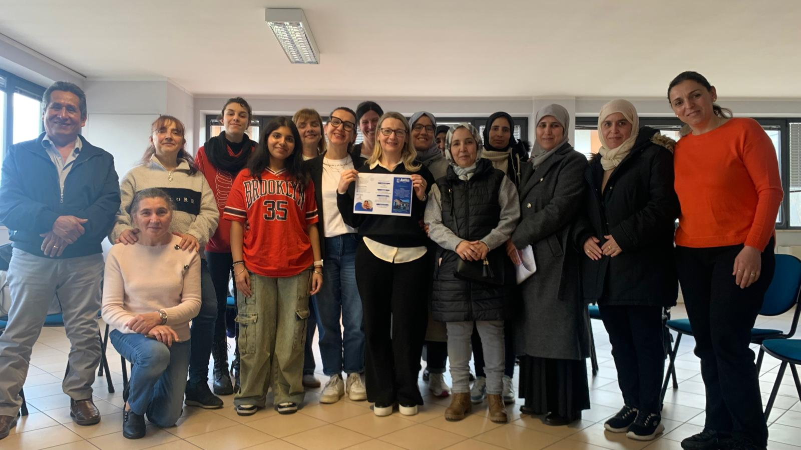

Progetti
I nostri progetti
Siamo attivamente impegnati nel territorio. Qui trovi una panoramica degli eventi e dei progetti a cui stiamo lavorando o abbiamo realizzato.
Corso di formazione per assistenti familiari

Nel 2024 abbiamo realizzato un percorso gratuito di 30 ore rivolto a chi desidera avviare o rafforzare la propria esperienza nell'assistenza domiciliare. Il corso ha fornito strumenti pratici, relazionali e culturali per affrontare con maggiore consapevolezza e competenza il lavoro di cura.
Seminario "Prendersi Cura dell'Altro"

A Marzo 2024 si è svolto il seminario "Prendersi Cura dell'Altro", un evento dedicato alla sensibilizzazione e formazione sui temi del caregiving e del sostegno psicologico.
Incontri tematici con esperti

Durante l'anno, abbiamo promosso una serie di incontri formativi con professionisti del settore sociosanitario. Tra i temi trattati: l'autismo, l'umanizzazione delle cure, il rapporto tra tempo e relazione, le basi giuridiche dell'Amministrazione di Sostegno.
Sono intervenuti:
– Matilde Vagnini (AUSL Modena) sull'umanizzazione delle cure
– Chiara Arletti (Istituto Charitas) sul tema dell'autismo
– Angela Azzaro sulla cura solidale
– Devis Trioschi (AUSL Modena) su mobilizzazione e abilità residue
– Luciano Gallo (ANCI ER) sul rapporto tra enti locali e Terzo Settore
Nuovo progetto

Descrizione del progetto da inserire. Indica il periodo, gli obiettivi, i partecipanti e i risultati raggiunti.
Nuovo progetto

Descrizione del progetto da inserire. Indica il periodo, gli obiettivi, i partecipanti e i risultati raggiunti.
Curacari sui media
Il nostro lavoro è riconosciuto dagli enti locali e dalla comunità. Ecco come la stampa locale racconta Curacari.